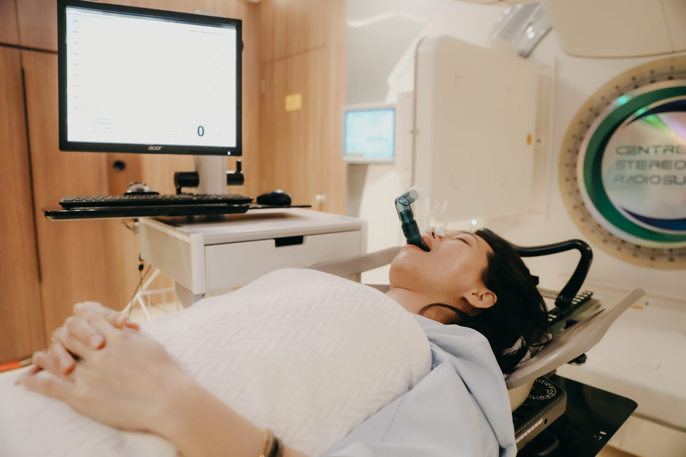

Lung & thoracic
SBRT for early-stage NSCLC, stereotactic radiosurgery for oligometastatic disease.
Read approach →AARO is Singapore's pioneering specialist radiation oncology practice. For over a decade, our team — founded by oncologists from the National Cancer Centre Singapore — has treated complex cancers with technology and judgement that justifies the journey.

Twelve cancer types, one consistent standard. Each cancer area is led by a named specialist who has treated it for years.
SBRT for early-stage NSCLC, stereotactic radiosurgery for oligometastatic disease.
Read approach →Hypofractionated regimens, partial breast irradiation, and survivorship pathways.
Read approach →SBRT-delivered prostate radiotherapy in five sessions, brachytherapy where indicated.
Read approach →SRS and SBRT for primary brain tumours, brain metastases, and spinal lesions.
Read approach →
Hands-on guidance from your radiation therapist before every session.

Each plan built from your imaging, reviewed by the consultant team.

Sub-millimetre precision with breath-hold protocols where it matters.

One named coordinator stays with you from first call to follow-up.

Each AARO specialist trained at the National Cancer Centre Singapore — the institution that built Singapore's modern radiation oncology programme. You'll meet the named consultant who will lead your care, the same person every visit.
No anonymous testimonials. Every story is told by the patient who lived it.

Mei Lin, 64 — Stage I NSCLC, treated by Dr Daniel Tan
Sarah, 52 — Early-stage breast, treated by Dr Jonathan Teh

Raj, 67 — Localised prostate, treated by Dr David Tan

Our purpose-built facility — the Centre for Stereotactic Radiosurgery on Adam Road — was designed to lower the temperature of every visit. Quiet rooms, a private lounge, and a flow that respects what you came in carrying.